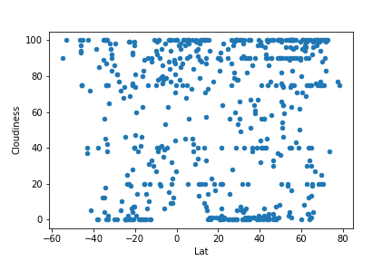

The purpose of this project is to show and analyze the relationship between latitude and the weather.To answer the questions this project posed we pulled data from the OpenWeatherMap API to assemble a dataset containing more than 500 cities.
Once the dataset was assembled we used Matplotlib to plot various aspects of the weather and the latitude. Factors such as temperature, cloudiness, wind speed, and humidity were all looked at. This site contains the visulizations generated from the analysis and explinations for the visulizations.